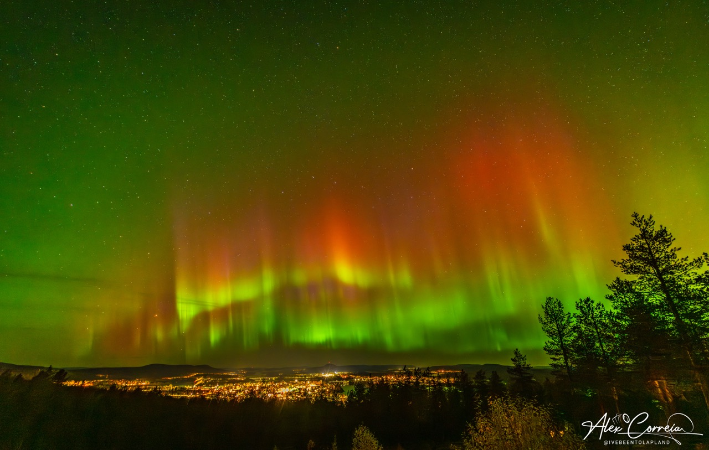

Jockfall waterfall
North of central Överkalix, the Kalix River drops over a waterfall with a salmon ladder alongside it. Come for the falls and the nearby walking trails, or check the local rules and permits if you're planning to fish.

A local guide · Swedish Lapland
Spend a winter morning in the snow with huskies, take a summer walk along the Kalix River, or head up Brännaberget for a view over town. This guide brings together day trips and seasonal activities for guests staying at The Yellow Aurora House in Gyljen.
Try a guided forest walk with huskies or use snowshoes when the snow is deep. For a longer outing, a guided snowmobile trip can be combined with an introduction to ice fishing.
Check snow and ice conditions with your guide before setting out, and confirm any age or driving requirements before booking.
For an easy outing, follow the Strandpromenaden waterfront path in central Överkalix. The trails at Grelsbyberget make for a longer walk in the forest. For a day on the water, look for guided kayaking or freshwater fishing.
If you plan to fish independently, check the permit and rules for the specific stretch of water before you go.
Find walking and hiking mapsSeptember through late March is a good window for aurora watching in Swedish Lapland. On a clear evening, start by stepping outside The Yellow Aurora House and giving your eyes time to adjust. Darkness and a clear sky help, and sightings depend on auroral activity.

North of central Överkalix, the Kalix River drops over a waterfall with a salmon ladder alongside it. Come for the falls and the nearby walking trails, or check the local rules and permits if you're planning to fish.
For a short trip close to town, drive up to the Brännaberget car park and follow the footpath to the viewpoint. You can see Överkalix, the Kalix River and Ängesån from the hill. The Grelsbyberget trails are nearby if you want to keep walking.
Brännaberget visitor information